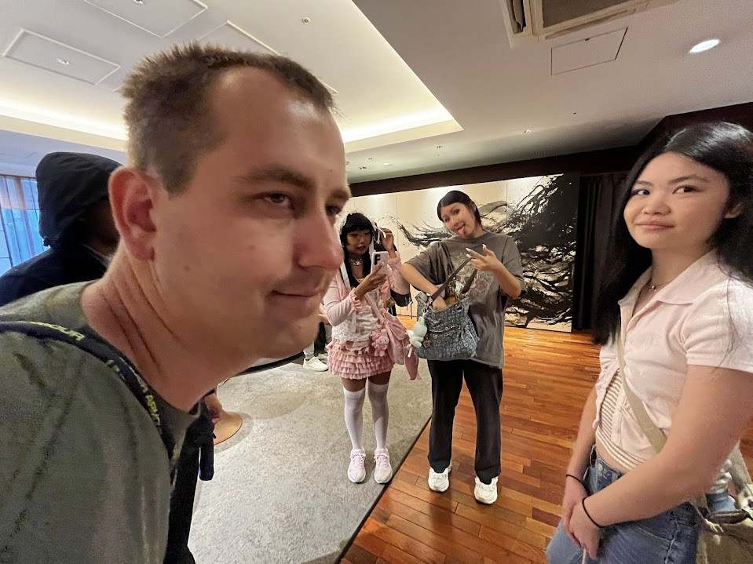
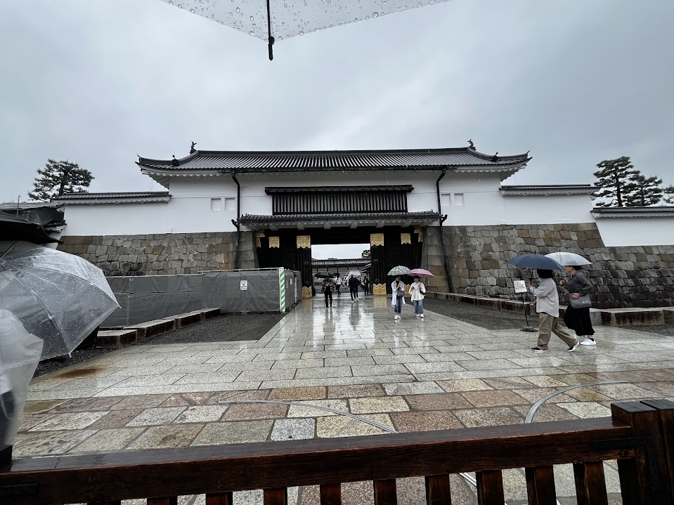
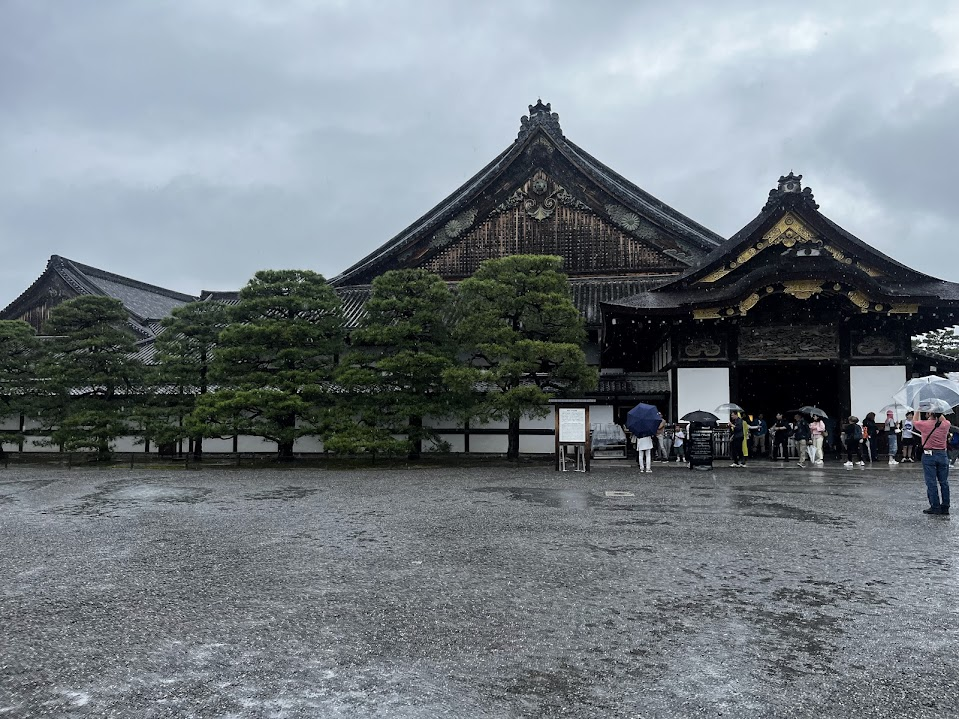
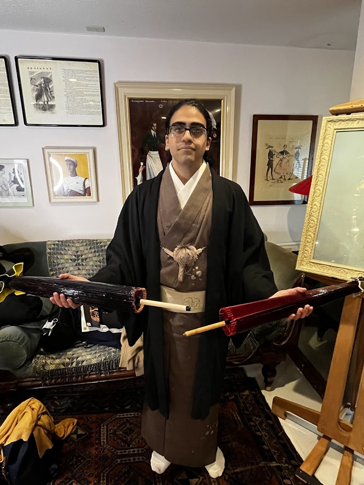
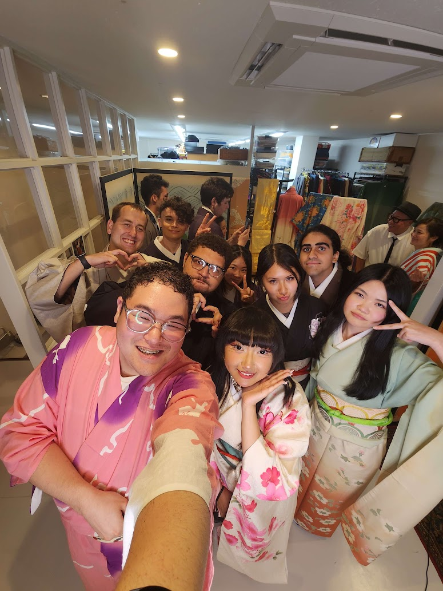
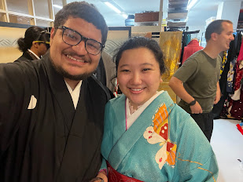
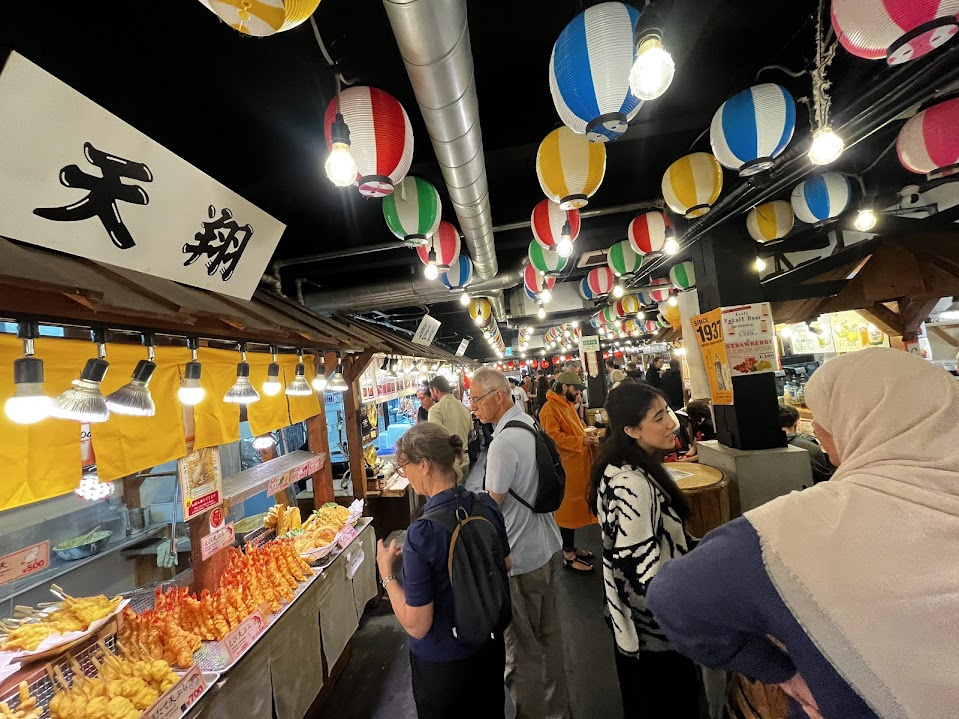
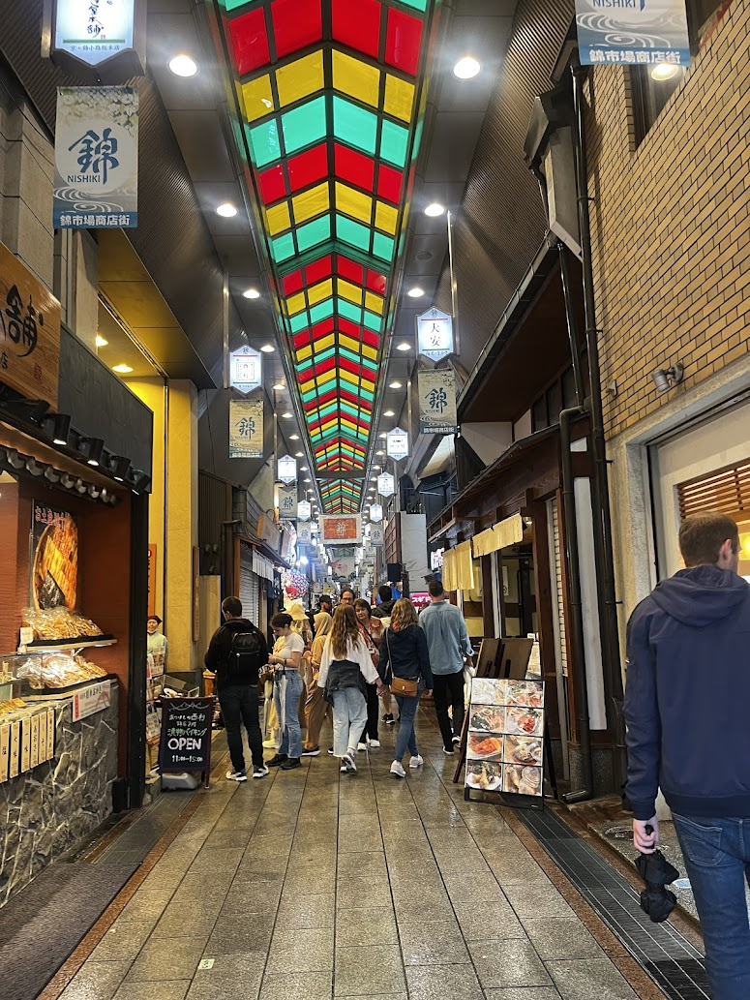

Day 11 – Kyoto, Japan
Our first day in Kyoto wasn’t the sunniest, as it rained throughout the entire day. Nonetheless, we pushed forward with our scheduled activities. Our first stop was Nijo Castle. While our time there was shorter compared to other spots, the artistic interior walls left a lasting impression. The walls were adorned with images of bonsai trees and floral designs that decorated nearly every surface. Unfortunately, I wasn’t allowed to take any photos inside, but the memories, and a few basic drawings I made, help remind me of the beauty that lay within the castle.
After we left the castle, we quickly made our way to a newly added destination on our itinerary: Professor Oda’s cousin’s kimono shop. The shop was small and compact, but it was lined with rows upon rows of stunning kimonos. The variety and beauty of the designs were incredible to witness hundreds of unique patterns and styles filled the space. We were given the opportunity to try on the kimonos and based on our personality and the look we were aiming for, the staff would carefully select a kimono for us. They even helped us dress in them for both solo and group photos.What followed was an amazing experience with everyone trying on their kimonos, freshening up their hair and makeup, and gathering together for a fun and memorable photo session. The staff at the shop were extremely kind and welcoming. They helped us tremendously with putting on the kimonos and making sure everyone felt comfortable. Their generosity and effort in organizing the group photos, along with offering us a nice discount on the goods we purchased, went above and beyond. Their hospitality and warmth were deeply appreciated, and it added to the overall impression of the incredible kindness and generosity that Japanese people, especially towards tourists, are known for.
After several hours of kimono-wearing and photo-taking, we ended our day at Nishiki Market for a well-deserved dinner. The market was full of tantalizing food stalls, and the smell of freshly cooked dishes was simply irresistible. There were plenty of options to choose from, including meats, seafood, and desserts. I treated myself to octopus, scallops, and takoyaki. The food was delicious, and I found it hard to stop myself from buying even more. It was a perfect way to end a rainy, yet unforgettable day in Kyoto.



